| 쫄 |
|---|
| B1 | 쫄 | 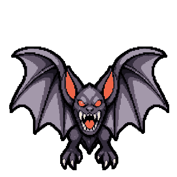 박쥐 |  고블린사냥꾼 고블린사냥꾼 | 강타 1: 단타. 필수 약점 1개(각 강타 1회). | 레퍼런스에 맞춰 과한 돌기·찢김과 표면 조각을 줄임. 등불 도깨비 → 고블린사냥꾼. 컨셉·이름만 변경; 전투 패턴 유지. |
| B1 | 쫄 | 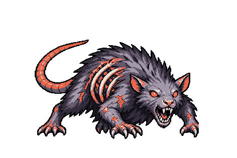 굴쥐 |  거미 거미 | 강타 1: 단타. 필수 약점 1개(각 강타 1회). | 레퍼런스의 무드·선·명암을 다시 맞춘 최신 Idle 적용. 레퍼런스에 맞춰 과한 돌기·찢김과 표면 조각을 줄임. 납골 전갈 → 거미. 컨셉·이름만 변경; 전투 패턴 유지. 임의 추가했던 0.45 / 1.05초 교대 공격 제거 → 원래 준비 0.75초의 일반 공격으로 롤백. |
| B1 | 쫄 | 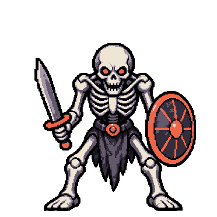 해골 |  해골 전사 해골 전사 | 동행 구성(조우별): 고블린사냥꾼 1기. 강타 1: 단타. 필수 약점 2개(각 강타 1회). | 레퍼런스의 무드·선·명암을 다시 맞춘 최신 Idle 적용. 레퍼런스에 맞춰 과한 돌기·찢김과 표면 조각을 줄임. 실매듭 망령 → 해골 전사. 컨셉·이름만 변경; 전투 패턴 유지. |
| B1 | 쫄 | 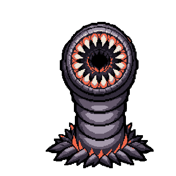 흡혈형 |  흡혈박쥐 흡혈박쥐 | 동행 구성(조우별): 거미 1기. 동일 개체 2기가 함께 등장. 흡혈: 플레이어에게 실제 체력 피해를 주면 자기 HP 18 회복. 강타 1: 단타. 필수 약점 2개(각 강타 1회). | 레퍼런스의 무드·선·명암을 다시 맞춘 최신 Idle 적용. 레퍼런스에 맞춰 과한 돌기·찢김과 표면 조각을 줄임. 관먹이 → 흡혈박쥐. 컨셉·이름만 변경; 전투 패턴 유지. |
| B1 | 쫄 | 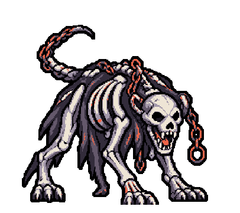 경보 사냥개 |  경종 사냥개 경종 사냥개 | 동행 구성(조우별): 고블린사냥꾼 1기. 강타 1: 단타. 필수 약점 1개(각 강타 1회). 강타 저지 실패: 거미 1기 소환(해당 개체가 없을 때). 이미 생존 중이면 추가 소환하지 않음. | 레퍼런스에 맞춰 과한 돌기·찢김과 표면 조각을 줄임. |
| B2 | 쫄 | 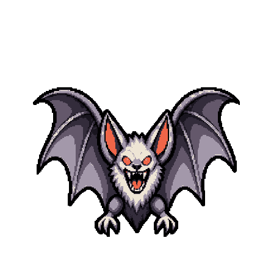 서리 박쥐 |  깃바늘 정령 깃바늘 정령 | 강타 1: 단타. 필수 약점 1개(각 강타 1회). | 레퍼런스에 맞춰 과한 돌기·찢김과 표면 조각을 줄임. |
| B2 | 쫄 | 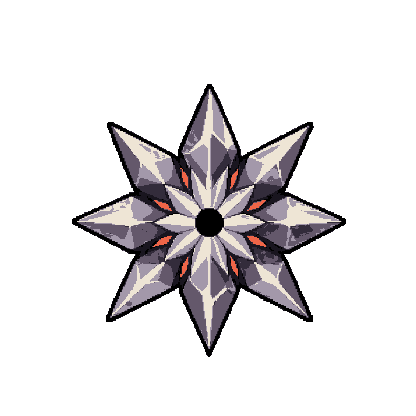 빙침 정찰병 |  결정 성게 결정 성게 | 동행 구성(조우별): 깃바늘 정령 1기. 일반 공격 2연타. 강타 1: 단타. 필수 약점 2개(각 강타 1회). | 이미지 수정 보류: 생성 도구 차단으로 기존 이미지를 유지. |
| B2 | 쫄 | 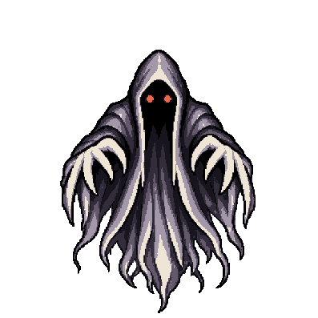 얼음 귀신 |  장막 예언자 장막 예언자 | 동행 구성(조우별): 깃바늘 정령 2기. 강타 1: 단타. 필수 약점 2개(각 강타 1회). | 레퍼런스에 맞춰 과한 돌기·찢김과 표면 조각을 줄임. |
| B2 | 쫄 | 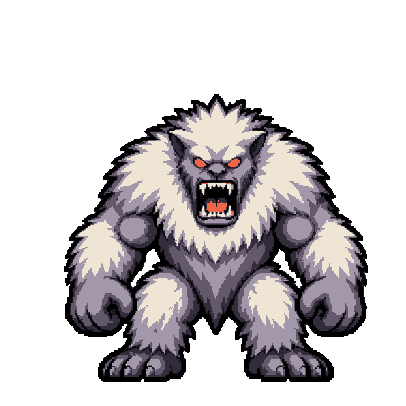 설인 |  엄니 순례자 엄니 순례자 | 동행 구성(조우별): 종토끼 1기. 강타 1: 단타. 필수 약점 2개(각 강타 2회). | 레퍼런스에 맞춰 과한 돌기·찢김과 표면 조각을 줄임. |
| B2 | 쫄 · 동행 1기 | 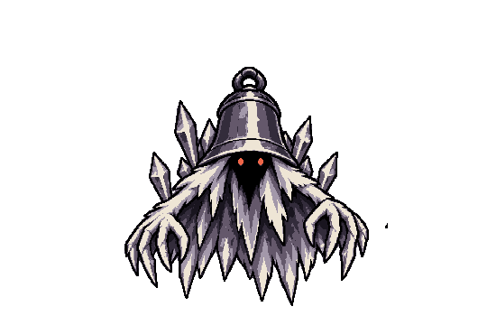 눈종 정령 |  종토끼↳ 엄니 순례자 전용 동행 종토끼↳ 엄니 순례자 전용 동행 | 엄니 순례자의 전용 동행 1기. 강타 1: 단타. 필수 약점 2개(각 강타 1회). | 레퍼런스에 맞춰 과한 돌기·찢김과 표면 조각을 줄임. |
| B3 | 쫄 | 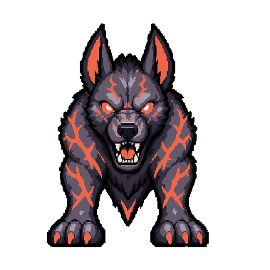 재 사냥개 |  숯불 도롱뇽 숯불 도롱뇽 | 동행 구성(조우별): 뱀 수문장 1기. 강타 1: 단타. 필수 약점 1개(각 강타 1회). | 레퍼런스에 맞춰 과한 돌기·찢김과 표면 조각을 줄임. |
| B3 | 쫄 | 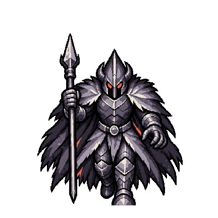 영혼 창병 |  뱀 수문장 뱀 수문장 | 강타 1: 단타. 필수 약점 2개(각 강타 2회). | 레퍼런스에 맞춰 과한 돌기·찢김과 표면 조각을 줄임. 임의 추가했던 0.805 / 1.879초 교대 공격 제거 → 원래 준비 1.342초의 일반 공격으로 롤백. |
| B3 | 쫄 | 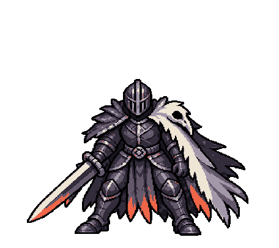 재까마귀 |  재 가고일 재 가고일 | 일반 공격 3연타. 강타 1: 단타. 필수 약점 2개(각 강타 1회). | 레퍼런스에 맞춰 과한 돌기·찢김과 표면 조각을 줄임. |
| B3 | 쫄 | 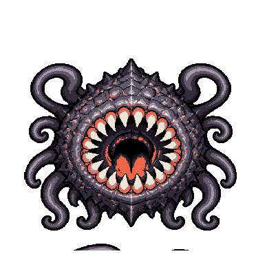 공허의 아가리 |  공허의 눈 공허의 눈 | 동행 구성(조우별): 재 가고일 1기. 강타 1: 단타. 필수 약점 2개(각 강타 2회). | 레퍼런스에 맞춰 과한 돌기·찢김과 표면 조각을 줄임. |
| B3 | 쫄 | 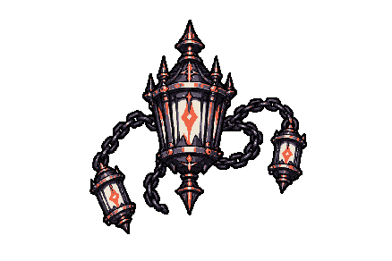 혼불 등잔 |  향로 망령 향로 망령 | 동행 구성(조우별): 숯불 도롱뇽 2기. 강타 1: 단타. 필수 약점 2개(각 강타 1회). | 레퍼런스에 맞춰 과한 돌기·찢김과 표면 조각을 줄임. |
| 엘리트 |
|---|
| B1 | 엘리트 | 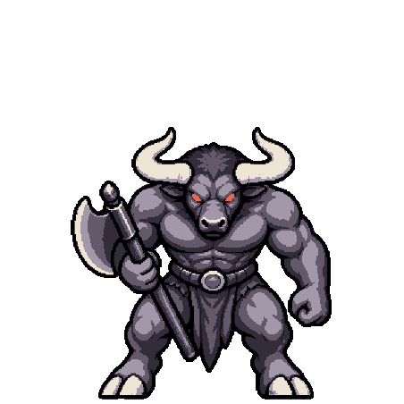 미노타우루스 |  쌍두 문지기 쌍두 문지기 | 강타 1: 3연타. 필수 약점 2개(각 강타 2회). | 레퍼런스에 맞춰 과한 돌기·찢김과 표면 조각을 줄임. 임의 추가했던 0.522 / 1.218초 교대 공격 제거 → 원래 준비 0.87초의 일반 공격으로 롤백. |
| B1 | 엘리트 | 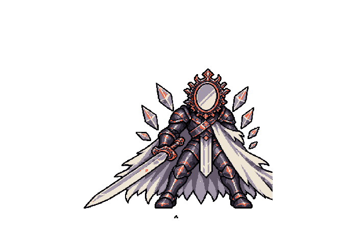 거울기사 |  움직이는 갑옷 움직이는 갑옷 | 일반 공격 2연타. 강타 1: 단타. 필수 약점 2개(각 강타 1회). 같은 방향의 무기 직접 베기를 연속 적중시키면 반격. | 레퍼런스의 무드·선·명암을 다시 맞춘 최신 Idle 적용. 레퍼런스에 맞춰 과한 돌기·찢김과 표면 조각을 줄임. 거울등 거북 → 움직이는 갑옷. 컨셉·이름만 변경; 전투 패턴 유지. |
| B1 | 엘리트 | 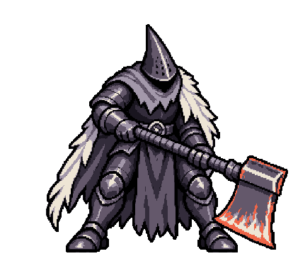 철갑 집행관 |  철갑 사마귀 철갑 사마귀 | 일반 공격 3연타. 강타 1: 단타. 필수 약점 1개(각 강타 1회). 보조 약점 1개(각 강타 3회); 파괴 시 스턴 시간 증가. | 레퍼런스에 맞춰 과한 돌기·찢김과 표면 조각을 줄임. 임의 추가했던 0.6 / 1.4초 교대 공격 제거 → 원래 준비 1초의 일반 공격으로 롤백. 기존 안내의 “보조 약점 세 개”와 달리 실제는 보조 1개에 강타 3회 필요. |
| B2 | 엘리트 | 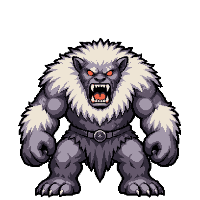 서리 거인 |  쌍각 파수꾼 쌍각 파수꾼 | 일반 공격 2연타. 방향 방어: 가로 베기로 방어를 파괴해야 몸통 타격 가능. 파괴 후 시간이 지나면 방어 재생. 강타 1: 단타. 필수 약점 2개(각 강타 1회). | 레퍼런스에 맞춰 과한 돌기·찢김과 표면 조각을 줄임. 임의 추가했던 0.672 / 1.568초 교대 공격 제거 → 원래 준비 1.12초의 일반 공격으로 롤백. |
| B2 | 엘리트 | 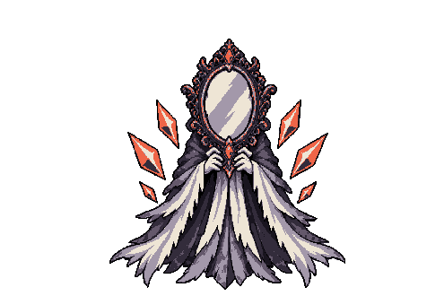 얼음 거울기사 |  거울나방 거울나방 | 일반 공격 2연타. 방향 방어: 내려 베기로 방어를 파괴해야 몸통 타격 가능. 파괴 후 시간이 지나면 방어 재생. 강타 1: 단타. 필수 약점 2개(각 강타 1회). 같은 방향의 무기 직접 베기를 연속 적중시키면 반격. | 레퍼런스에 맞춰 과한 돌기·찢김과 표면 조각을 줄임. |
| B2 | 엘리트 | 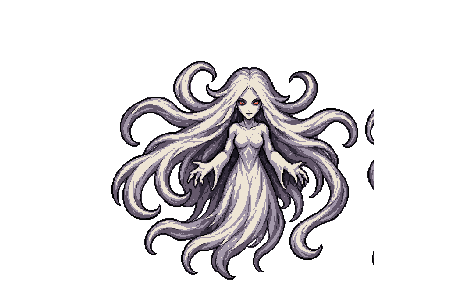 창백한 위습 |  가면 성가수 가면 성가수 | 동일 개체 3기가 함께 등장. 일반 공격 2연타. 강타 1: 단타. 필수 약점 1개(각 강타 1회). | 레퍼런스에 맞춰 과한 돌기·찢김과 표면 조각을 줄임. |
| B3 | 엘리트 | 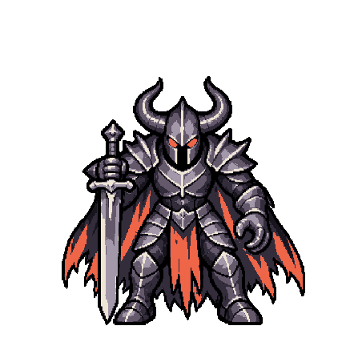 영혼 기사 |  파계 기마수 파계 기마수 | 일반 공격 3연타. 강타 1: 단타. 필수 약점 3개(각 강타 1회). | 레퍼런스에 맞춰 과한 돌기·찢김과 표면 조각을 줄임. |
| B3 | 엘리트 | 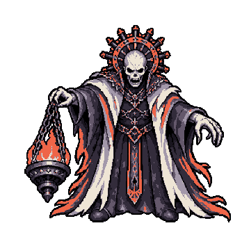 피의 집행자 |  핏빛 백작 핏빛 백작 | 일반 공격 2연타. 강타 1: 단타. 필수 약점 3개(각 강타 1회). 무기 직접 타격을 5회 받을 때마다 다음 일반 공격·강타가 빨라짐. | 레퍼런스에 맞춰 과한 돌기·찢김과 표면 조각을 줄임. |
| B3 | 엘리트 | 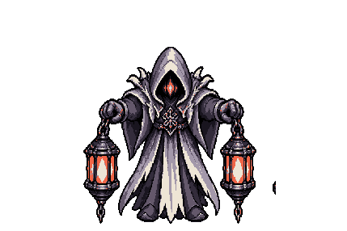 검은 등불 사제 |  재의 대사제 재의 대사제 | 동행 구성(조우별): 재 가고일 2기. 강타 1: 단타. 필수 약점 2개(각 강타 1회). 강타 저지 실패: 향로 망령 1기 소환(해당 개체가 없을 때). 이미 생존 중이면 추가 소환하지 않음. | 레퍼런스에 맞춰 과한 돌기·찢김과 표면 조각을 줄임. |
| 보스 |
|---|
| B1 | 보스 | 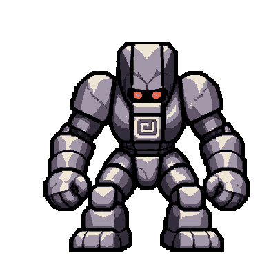 미궁의 수호자 |  미궁 스핑크스 미궁 스핑크스 | 방향 방어: 세로 베기로 방어를 파괴해야 몸통 타격 가능. 파괴 후 시간이 지나면 방어 재생. 강타 1: 단타. 필수 약점 3개(각 강타 1회). 강타 2: 단타. 필수 약점 4개(각 강타 1회). | 레퍼런스에 맞춰 과한 돌기·찢김과 표면 조각을 줄임. |
| B1 | 보스 | 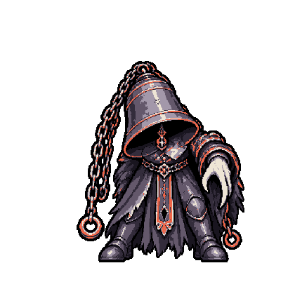 종지기 |  납골당의 종 납골당의 종 | 일반 공격 3연타. 강타 1: 단타. 필수 약점 3개(각 강타 1회). | 레퍼런스에 맞춰 과한 돌기·찢김과 표면 조각을 줄임. |
| B1 | 보스 | 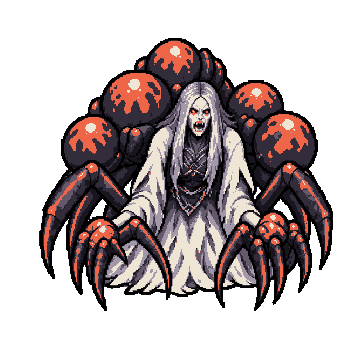 회전 둥지의 주인 |  실짜는 공작부인 실짜는 공작부인 | 동행 구성(조우별): 실인형 2기. 강타 1: 단타. 필수 약점 2개(각 강타 1회). | 레퍼런스에 맞춰 과한 돌기·찢김과 표면 조각을 줄임. |
| B1 | 쫄 · 동행 2기 | 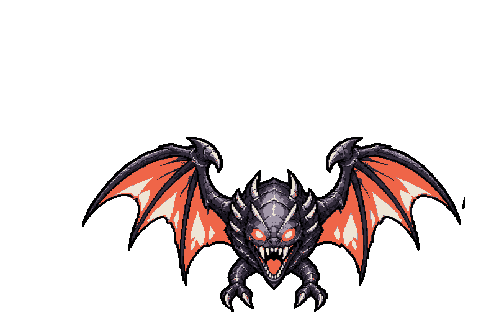 선회 박쥐 |  실인형↳ 실짜는 공작부인 전용 동행 실인형↳ 실짜는 공작부인 전용 동행 | 실짜는 공작부인의 전용 동행 2기. 강타 1: 단타. 필수 약점 1개(각 강타 1회). 본체 주위를 공전하며 공격. 비종속 본체가 모두 사망하면 함께 소멸. | 레퍼런스에 맞춰 과한 돌기·찢김과 표면 조각을 줄임. |
| B2 | 보스 | 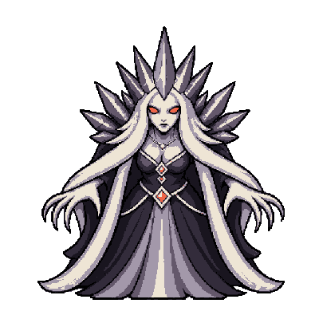 서리 여왕 |  겨울의 일각수 겨울의 일각수 | 강타 1: 단타. 필수 약점 3개(각 강타 1회). 강타 저지 실패: 깃바늘 정령 1기 소환(해당 개체가 없을 때). 이미 생존 중이면 자기 HP 24 회복. | 레퍼런스에 맞춰 과한 돌기·찢김과 표면 조각을 줄임. |
| B2 | 보스 | 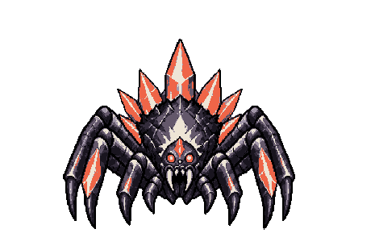 수정 거미 |  수정 등딱지 수정 등딱지 | 일반 공격 4연타. 방향 방어: 내려 베기로 방어를 파괴해야 몸통 타격 가능. 파괴 후 시간이 지나면 방어 재생. 강타 1: 단타. 필수 약점 3개(각 강타 1회). | 레퍼런스에 맞춰 과한 돌기·찢김과 표면 조각을 줄임. |
| B2 | 보스 | 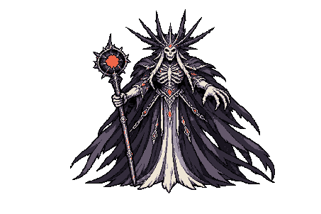 폭풍의 모체 |  폭풍의 대붕 폭풍의 대붕 | 동행 구성(조우별): 폭풍 해파리 2기. 일반 공격 2연타. 강타 1: 단타. 필수 약점 2개(각 강타 1회). | 레퍼런스에 맞춰 과한 돌기·찢김과 표면 조각을 줄임. 임의 추가했던 0.72 / 1.68초 교대 공격 제거 → 원래 준비 1.2초의 일반 공격으로 롤백. |
| B2 | 쫄 · 동행 2기 | 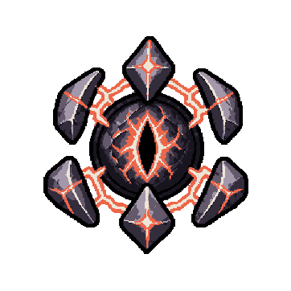 선회 뇌구 |  폭풍 해파리↳ 폭풍의 대붕 전용 동행 폭풍 해파리↳ 폭풍의 대붕 전용 동행 | 폭풍의 대붕의 전용 동행 2기. 일반 공격 2연타. 강타 1: 단타. 필수 약점 1개(각 강타 1회). 본체 주위를 공전하며 공격. 비종속 본체가 모두 사망하면 함께 소멸. | 레퍼런스에 맞춰 과한 돌기·찢김과 표면 조각을 줄임. |
| B3 | 보스 | 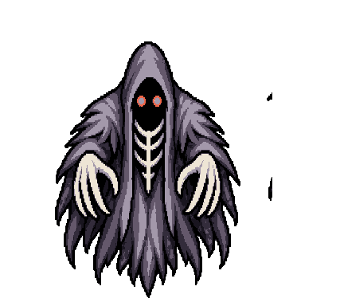 영혼 포식자 |  잿불의 용 잿불의 용 | 강타 1: 단타. 필수 약점 4개(각 강타 1회). | 레퍼런스에 맞춰 과한 돌기·찢김과 표면 조각을 줄임. 임의 추가했던 0.522 / 1.218초 교대 공격 제거 → 원래 준비 0.87초의 일반 공격으로 롤백. |
| B3 | 보스 | 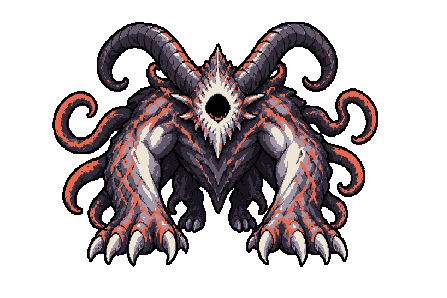 일식의 짐승 |  일식의 키메라 일식의 키메라 | 동행 구성(조우별): 해 우상 1기, 달 우상 1기. 일반 공격 2연타. 강타 1: 5연타. 필수 약점 2개(각 강타 1회). 해 우상 생존 시 선택 가능한 강타. 해당 보조 개체 파괴 시 이 강타 차단. 강타 2: 단타. 필수 약점 2개(각 강타 1회). 달 우상 생존 시 선택 가능한 강타. 해당 보조 개체 파괴 시 이 강타 차단. 강타 3: 단타. 필수 약점 2개(각 강타 1회). 해/달 우상 둘 다 사라지면 본체 스턴. 각 우상이 담당하는 강타만 차단되며, 보조 개체가 필요 없는 강타는 남음. | 레퍼런스에 맞춰 과한 돌기·찢김과 표면 조각을 줄임. |
| B3 | 쫄 · 동행 1기 | 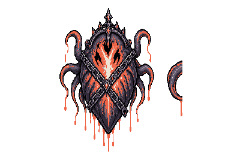 일식의 좌심장 |  해 우상↳ 일식의 키메라 전용 동행 해 우상↳ 일식의 키메라 전용 동행 | 일식의 키메라의 전용 동행 1기. 직접 공격 없이 본체를 지원. 해 우상: 본체의 5연타 강타를 유지. 비종속 본체가 모두 사망하면 함께 소멸. | 레퍼런스에 맞춰 과한 돌기·찢김과 표면 조각을 줄임. |
| B3 | 쫄 · 동행 1기 | 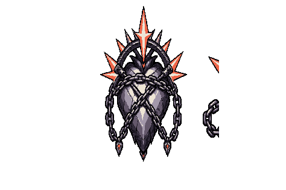 일식의 우심장 |  달 우상↳ 일식의 키메라 전용 동행 달 우상↳ 일식의 키메라 전용 동행 | 일식의 키메라의 전용 동행 1기. 직접 공격 없이 본체를 지원. 달 우상: 본체의 연결 강타를 유지. 비종속 본체가 모두 사망하면 함께 소멸. | 레퍼런스에 맞춰 과한 돌기·찢김과 표면 조각을 줄임. |
| B3 | 보스 | 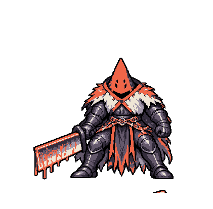 재의 군단장 |  잿불 왕 잿불 왕 | 일반 공격 5연타. 강타 1: 단타. 필수 약점 3개(각 강타 1회). 강타 저지 실패: 재 가고일 1기 소환(해당 개체가 없을 때). 이미 생존 중이면 추가 소환하지 않음. 강타 2: 3연타. 필수 약점 2개(각 강타 1회). | 레퍼런스에 맞춰 과한 돌기·찢김과 표면 조각을 줄임. |
| 특수 조우 · 시련 |
|---|
| 공통 | 특수 · 상자 | 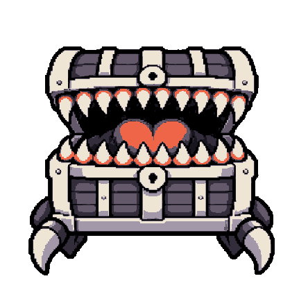 미믹 |  철니 미믹 철니 미믹 | 강타 1: 단타. 필수 약점 2개(각 강타 2회). | 레퍼런스에 맞춰 과한 돌기·찢김과 표면 조각을 줄임. |
| 공통 | 특수 · 상인 변이 | 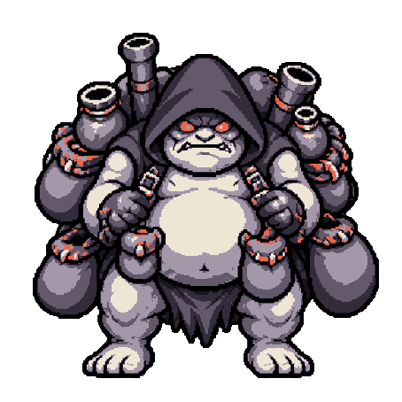 상인 돌연변이 |  금먹는 두꺼비 금먹는 두꺼비 | 강타 1: 단타. 필수 약점 3개(각 강타 2회). | 레퍼런스에 맞춰 과한 돌기·찢김과 표면 조각을 줄임. |
| 공통 | 특수 · 시련(이벤트) | 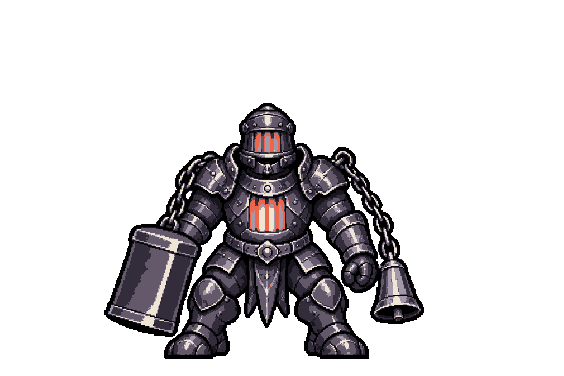 봉인된 시련의 수호자 |  가시등 시련수 가시등 시련수 | 일반 공격 2연타. 강타 1: 단타. 필수 약점 2개(각 강타 1회). | 레퍼런스에 맞춰 과한 돌기·찢김과 표면 조각을 줄임. 임의 추가했던 0.66 / 1.54초 교대 공격 제거 → 원래 준비 1.1초의 일반 공격으로 롤백. |
| 공통 | 특수 · 시련(이벤트) | 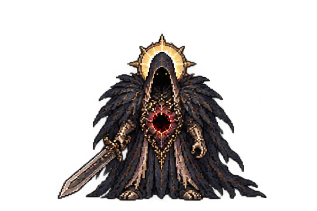 심층 시련의 수호자 |  왕관 거신 왕관 거신 | 동행 구성(조우별): 결정 성게 1기. 일반 공격 2연타. 강타 1: 단타. 필수 약점 3개(각 강타 1회). | 레퍼런스에 맞춰 과한 돌기·찢김과 표면 조각을 줄임. |